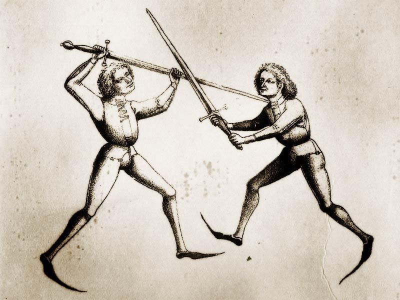

About our group
A little history
it is our mission to study, recreate and practice the medieval German Kunst des Fechtens (the “Art of Fighting"), which was an incredibly complex and sophisticated martial arts system. Importantly, we also intend to embrace and institute the characteristic chivalric philosophy that was indigenous to the noble masters who studied the arts in the 14th and 15th Centuries. We encourage all LIHFS members to undertake their studies with universal respect and honor, and we will strive to deploy this noble attitude in conjunction with our martial focus in an attempt to optimize our collective experience and success.
 Through our ongoing research, LIHFS will bring to life the teachings of the historical masters via our proprietary Curriculum, which is one of the most thorough and authentic programs available to the modern student. Our Curriculum includes theoretical teachings and practical application through hands-on instruction from our Master-at-Arms, solo drills, partnered exercises, and fencing with blunted and wooden long swords as well as wrestling. In the interests of diversity, we will strive to bring other modern day masters to class from time to time as guest instructors to exchange ideas and share best practices. Our primary focus will be the German Longsword. As our group progresses, we may expand our studies to include the study of the arming sword and buckler, dagger, spear, poleaxe, and messer. Classes are intended to build a progressive understanding of the art and will be offered at one of three levels – Novice; Intermediate and Advanced
- Sessions 1 through 7: Novice
- Sessions 8 through 11: Intermediate
- Sessions 12 through 15: Advanced
We are led by experienced Longsword fencer Michael Capanelli and Bradley Rangell, active HEMA Ambassador and advocate. We are advised by Gene Davis, who is an expert swordsman with years of practical application, study and interpretations of the manuals. Gene is also an archaeologist, and has helped to develop our curriculum
- We are not a re-enactment or LARP organization
- We are not a theatrical or ‘stage-fighting’ group
- We are a martial arts group studying HEMA